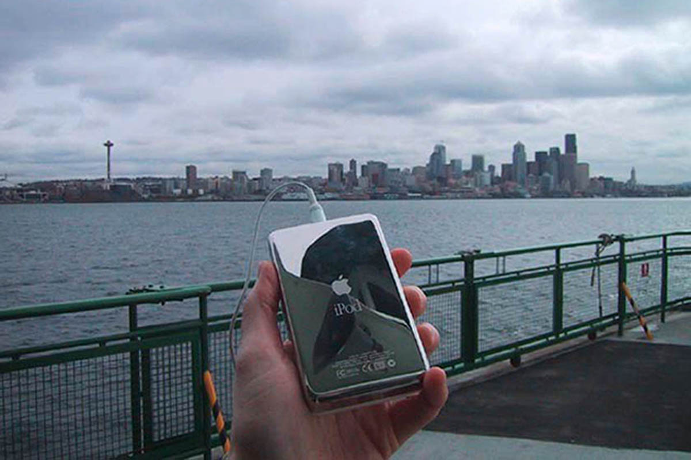

Welcome to myPod
Welcome to the place to show off your iPod, wherever you might be.
Wanna join the fun? All you need is any iPod, from the early classic
iPod to the latest iPod Nano, the smallest iPod Shuffle to the largest
iPod Photo, and a digital camera. Just take a snapshot of your iPod in
your favorite location and we'll be glad to post it on myPod. So, what
are you waiting for?
Seattle, Washington
Me and my iPod in Seattle! You can see rain clouds and the Space Needle. You can't see the 628 coffee shops



Birmingham, England
Here are some iPod photos around Birmingham. We've obviously got some
passionate folks over here who love their iPods. Check out the classic
red British telephone box!